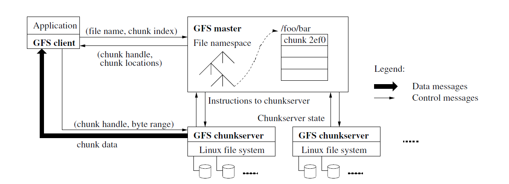
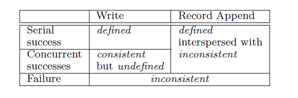
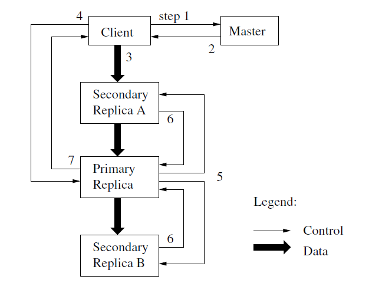

GFS是谷歌在03年发布的关于构建分布式文件系统的论文，全文高屋建瓴的概括了建立分布式文件系统的方向和各种性能之间的权衡，提出了设计分布式文件系统的初衷，描述了相关背景意义，详尽的解释了GFS的设计理念和构筑流程，描绘了许多难点和挑战，具有非常高的启发意义。然而本文干货太多了，读每一段的时候都感觉大有收获，但是读完下一段上一段的内容就忘的差不多了，及至读完全文，大脑因为接受信息太多而一片混沌。本文参考网上一些博客和导读，旨在梳理整篇文章的思路，以及做一些总结。
参考
本文写的非常简略，只是把一些重点摘抄出来，建议大家看看这个 。
原文地址
经典论文翻译导读之《Google File System》
典型分布式系统分析
GFS提出的背景
随着谷歌公司的发展，和MapReduce的应用，关于如何存储数据，以及如何快速读取、删除、修改数据成为一个困扰公司发展的难题。GFS的设计着眼于几个目标：性能、可伸缩性、可靠性和可用性。GFS汲取传统文件系统的精华，结合具体场景需求做出了大胆的创新，他们所基于的场景有如下几种特点：
- 组件故障是常态而不是异常。当年谷歌公司用的磁盘并不昂贵，很容易出现各种问题导致数据丢失或者磁盘短时间不可用。
- 要处理的文件不仅非常大，而且多，且每个文件内的应用对象复杂，给文件系统索引带来很大挑战。
- 大部分文件的修改都是在文件后面append新的数据，而不是覆盖或者改写已有的数据，随机写几乎不存在。
- 向应用提供类似文件系统的API，提高了系统的灵活性。
GFS系统的假设
任何系统都是根据实际需求设计的，而在设计过程中，则需要抽象出实际场景的特点并进行相应的假设，从而根据这些假设推导出系统所必需的功能。GFS是基于以下几个假设设计的：
- 系统是构建在很多廉价的、普通的组件上，组件会经常发生故障。它必须不间断监控自己、侦测错误，能够容错和快速恢复。
- 系统存储了适当数量的大型文件，我们预期几百万个，每个通常是100MB或者更大，即使是GB级别的文件也需要高效管理。也支持小文件，但是不需要着重优化。
- 系统主要面对两种读操作：大型流式读和小型随机读。在大型流式读中，单个操作会读取几百KB，也可以达到1MB或更多。相同客户端发起的连续操作通常是在一个文件读取一个连续的范围。小型随机读通常在特定的偏移位置上读取几KB。重视性能的应用程序通常会将它们的小型读批量打包、组织排序，能显著的提升性能。
- 也会面对大型的、连续的写，将数据append到文件。append数据的大小与一次读操作差不多。一旦写入，几乎不会被修改。不过在文件特定位置的小型写也是支持的，但没有着重优化。
- 系统必须保证多客户端对相同文件并发append的高效和原子性。我们的文件通常用于制造者消费者队列或者多路合并。几百个机器运行的制造者，将并发的append到一个文件。用最小的同步代价实现原子性是关键所在。文件被append时也可能出现并发的读。
- 持久稳定的带宽比低延迟更重要。我们更注重能够持续的、大批量的、高速度的处理海量数据，对某一次读写操作的回复时间要求没那么严格。
GFS的架构
GFS一共由三部分组成：Master、Client、Chunkserver。其中，Master任意时刻只能同时存在一个，而Chunkserver和client有很多个。
存入到GFS的文件被划分为很多个chunk，每个chunk大小是64MB，并且在创建时会被分配一个全局唯一的chunk句柄。这些chunk被存储到许多个服务器上，这些管理文件chunk的服务器被称为Chunkserver。在Chunkserver上，chunk是以普通linux文件存储，并且按照chunk句柄和字节范围来读写chunk数据。为了可靠性，每个chunk被复制到多个chunkserver上，默认是3份，并且一般是跨机房/架复制，用户能为不同命名空间的文件配置不同的复制级别。
master维护所有的文件系统元数据。元数据包括命名空间（文件名字树）、从文件到chunk的映射、chunk的位置（处于哪一个chunkserver中）。同时也负责负责整体的调度，比如chunk租赁管理（后面会提到），孤立chunk的垃圾回收（不属于任何一个文件但是有内容的chunk），以及chunkserver之间的数据迁移。master会周期性的和每个chunkserver通过心跳信息通信，收集他们的状态。
客户端和chunkserver都不会缓存信息，因为大部分应用都是顺序读取文件，因此缓存文件之间的chunk收益很低。
GFG采用单一Master节点，单一master节点能够保证多个客户请求是有序的，能够使用全局策略执行复杂的chunk布置、指定复制决策等。因为所有client的文件访问都要经过master调度，所以在读写过程中应该尽量减少和master节点的依赖，转而将读写压力放到具体chunkserver中。一般而言，客户端只是从master节点获取文件保存的chunkserver保存的地址，后续的读写操作都会在client和chunkserver之间进行。

一个典型的文件读操作是这样的：
- 应用程序调用GFS client提供的接口，表明要读取的文件名、偏移、长度。
- GFS Client将偏移按照规则翻译成chunk序号，发送给master。
- master将chunk id与chunk的副本位置告诉GFS client。
- GFS client向最近的持有副本的Chunkserver发出读请求，请求中包含chunk id与范围。
- ChunkServer读取相应的文件，然后将文件内容发给GFS client。
GFS的操作日志
操作日志是对重要元数据变更的历史记录。它是GFS的核心之一。不仅因为它是元数据唯一的持久化记录，而且它还要承担一个逻辑上的时间标准，为并发的操作定义顺序。各文件、chunk、以及它们的版本，都会根据它们创建时的逻辑时间被唯一的、永恒的标识。既然操作日志这么重要，我们必须可靠的存储它，而且直至元数据更新被持久化完成（记录操作日志）之后，才能让变化对客户端可见。否则，我们有可能失去整个文件系统或者最近的客户端操作，即使chunkserver没有任何问题（元数据丢了或错了，chunkserver没问题也变得有问题了）。因此，我们将它复制到多个远程机器，直到日志记录被flush到本地磁盘以及远程机器之后才会回复客户端。master会捆绑多个日志记录，一起flush，以减少flush和复制对整个系统吞吐量的冲击。master可以通过重放操作日志来恢复它的元数据状态。为了最小化master的启动时间，日志不能太多（多了重放就需要很久）。所以master会在适当的时候执行“存档”，每当日志增长超过一个特定的大小就会执行存档。所以它不需要从零开始回放日志，仅需要从本地磁盘装载最近的存档，并回放存档之后发生的有限数量的日志。存档是一个紧密的类B树结构，它能直接映射到内存，不用额外的解析。通过这些手段可以加速恢复和改进可用性。因为构建一个存档会消耗点时间，master的内部状态做了比较精细的结构化设计，创建一个新的存档不会延缓持续到来的请求。master可以快速切换到一个新的日志文件，在另一个后台线程中创建存档。这个新存档能体现切换之前所有的变异结果。即使一个有几百万文件的集群，创建存档也可以在短时间完成。结束时，它也会写入本地和远程的磁盘。恢复元数据时，仅仅需要最后完成的存档和其后产生的日志。老的存档和日志文件能被自由删除，不过我们保险起见不会随意删除。在存档期间如果发生故障（存档文件烂尾了）也不会影响正确性，因为恢复代码能侦测和跳过未完成的存档。
GFS的一致性保证
文件命名空间变化（比如文件创建）是原子的，只有master能处理此种操作：master中提供了命名空间的锁机制，保证了原子性的和正确性；master的操作日志为这些操作定义了一个全局统一的顺序。然而，客户对数据的更改是不确定的，可能会有多个用户同时对同一个文件进行修改，又因为文件的chunk存在副本，每个客户可能访问到同一个文件的不同副本，如果此时不同客户对同一文件的不同副本进行修改，就会带来文件内容不一致的效果。GFS采用租赁机制解决这个问题。
首先，GFS将文件修改划分为以下几个状态：

在有ABC三个客户，对同一文件分别增加了123（A增加的），456（B增加的），789（C增加的）三行数据的情况下，如果ABC三个客户都看到了123，456，789中的任意一个，那么就称本次修改是defined的。如果三个客户都看到同一个数据，但是这个数据是多个修改混合的结果，比如ABC都看到了148或者257，这种情况下，文件三个副本的内容是一致的，但是文件的修改是多个客户修改混合的结果，这种情况被称为undefined。
为了解决undefined的情况，GFS采用了租赁机制。假设同一个文件有三个副本，租赁机制是指，其中的某一个副本向master申请为这个文件三个副本的主副本，其余两个副本是次副本。当接到多个用户的修改时，这些修改会先同一发到主副本，主副本将这些修改排序，然后将排序后的文件修改顺序同步到其余两个副本，这样一来，三个副本都能按照同一个修改顺序串行更改文件内容。 这里的串行更像是逻辑上的串行，而不是执行修改操作的顺序。也即是说，这里的串行规定了多个更改的顺序，而执行更改时，可以根据修改的顺序推测处某次修改的文件偏移量，然后多个修改并发进行。比如接到了ABCD四个更改，经过主副本排序后，一致认定以ABCD的顺序进行修改。此时对于B修改而言，只要计算出A修改后的文件偏移量，就能计算出自己修改的文件偏移量，然后和A同时更改文件即可。
GFS的数据写入过程
在GFS中，数据流与控制流是分开的，如图所示：

- Client向master请求Chunk的副本信息，以及哪个副本（Replica）是primary。
- maste回复client，client缓存这些信息在本地。
- client将数据（Data）链式推送到所有副本。
- Client通知Primary提交。
- primary在自己成功提交后，通知所有Secondary提交。
- Secondary向Primary回复提交结果。
- primary回复client提交结果。
GFS将数据流和控制流信息分开的目的是最大化利用每个机器的网络带宽，避免网络瓶颈和高延迟连接，最小化推送延迟。
GFS的垃圾文件回收
在一个文件被删除后，GFS不会立刻回收物理存储。它会在懒惰的、延迟的垃圾回收时才执行物理存储的回收。
当一个文件被应用删除时，master立刻打印删除操作的日志，然而不会立刻回收资源，仅仅将文件重命名为一个隐藏的名字，包含删除时间戳。在master对文件系统命名空间执行常规扫描时，它会删除任何超过3天的隐藏文件（周期可配）。在那之前此隐藏文件仍然能够被读，而且只需将它重命名回去就能恢复。当隐藏文件被删除时，它才在内存中元数据中被清除，高效的切断它到自己所有chunk的引用。
在另一个针对chunk命名空间的常规扫描中，master会识别出孤儿chunk（也就是那些任何文件都不会引用的chunk），并删除它们的元数据。在与master的心跳消息交换中，每个chunkserver都会报告它的一个chunk子集，master会回复哪些chunk已经不在其元数据中了，chunkserver于是删除这些chunk的副本。
尽管分布式垃圾回收是一个困难的问题，它需要复杂的解决方案，但是GFS的做法却很简单。master的“文件到chunk映射”中记录了对各chunk引用信息。GFS也能轻易的识别所有chunk副本：他们是在某台chunkserver上、某个指定的目录下的一个Linux文件。任何master没有登记在册的副本都可以认为是垃圾。
GFS的垃圾回收方案主要有三点优势：
- 保证了可靠性的同时也简化了系统。
- 垃圾回收的逻辑被合并到master上各种例行的后台活动中，比如命名空间扫描，与chunkserver的握手等。所以它一般都是批处理的，花费也被大家分摊。而且它只在master相对空闲时执行，不影响高峰期master的快速响应。
- 延迟的回收有时可挽救偶然的不可逆的删除（比如误操作）。
旧副本侦测
当chunkserver故障，错过对chunk的变异时，它的版本就会变旧。master会为每个chunk维护一个版本号来区分最新的和旧的副本。
每当master授予一个新的租赁给某个chunk，都会增长chunk版本号并通知各副本。master和这些副本都持久化记录新版本号。这些都是在写操作被处理之前就完成了。如果某个副本当前不可用，它的chunk版本号不会被更新。master可以侦测到此chunkserver有旧的副本，因为chunkserver重启时会汇报它的chunk及其版本号信息。如果master看到一个比自己记录的还要高的版本号，它会认为自己在授予租赁时发生了故障，继而认为更高的版本才是最新的。
master会在常规垃圾回收活动时删除旧副本。在那之前，它只需保证回复给客户端的信息中不包含旧副本。不仅如此，master会在各种与客户端、与chunkserver的其他交互中都附带上版本号信息，尽可能避免任何操作、活动访问到旧的副本。